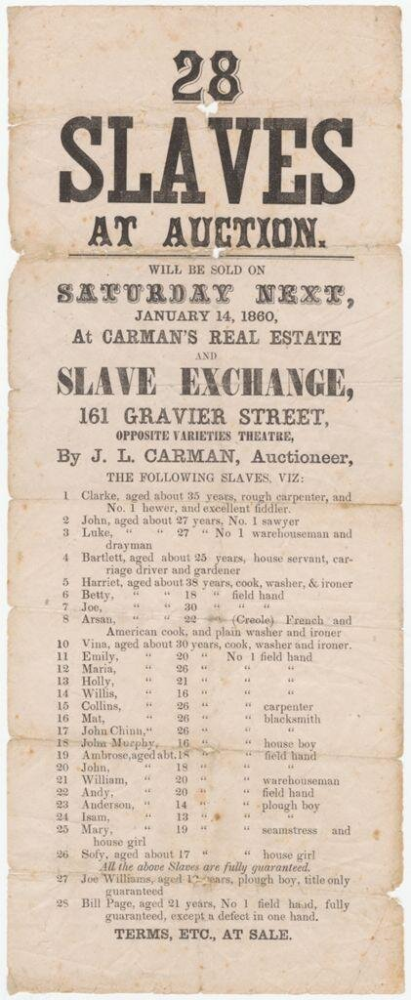
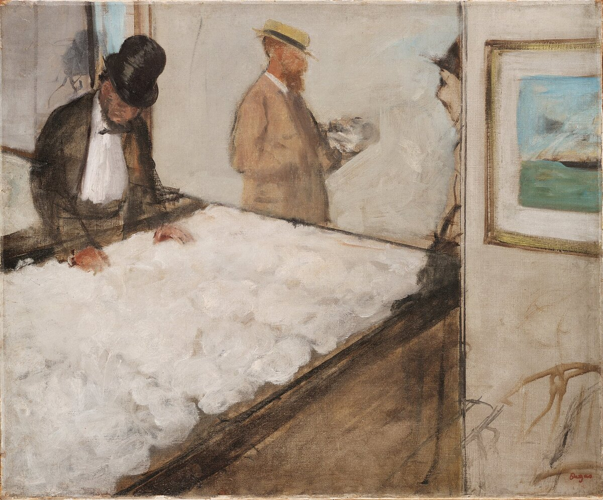
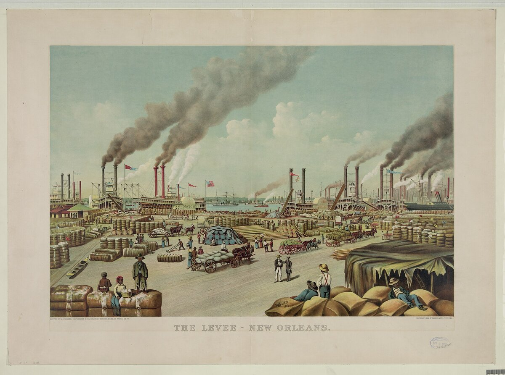

C2 · American History
Slavery and the Making of the American Economy
That slavery was profitable is not in dispute. What it built, and how much of modern capitalism rests on it, is one of the sharpest arguments in economic history.
Play the audio and follow along, then read it again on your own. Tap or hover over a highlighted word to see what it means.
Begin with the figures that nobody contests, because they are startling enough on their own. On the eve of the Civil War, raw cotton accounted for roughly half of American exports by value. The four million people held in slavery were, collectively, the largest single category of wealth in the United States — valued at a sum greater than all the country's railroads, factories and banks combined. Whatever else the antebellum economy was, it was an economy whose principal asset was human beings.

For most of the twentieth century this was treated as a regional matter: a southern institution, agricultural and backward, which the industrial North defeated and replaced. The historiography has moved decisively against that. The cotton that left Charleston and New Orleans went to Lancashire and Lowell; the ships were northern, the insurance was northern or British, the credit that financed the next crop ran through New York, and enslaved people were routinely accepted as collateral for loans, which means they were an instrument of finance as well as a form of labor. Several universities and more than one bank that still exists have since published their own accounting of what that meant for them.

From this a stronger claim has been built, associated with what is called the New History of Capitalism: that slavery was not merely compatible with industrial capitalism but constitutive of it — that the plantation was an innovation in management and measurement, and that the growth of the Atlantic economy depended on it in a way that makes the usual distinction between free and unfree economies untenable.

This is where the argument becomes genuinely contested, and a reader should know that it is. Economic historians have challenged specific pillars of the strong version with some force. The rising output per picker through the first half of the century, which one influential account attributed to escalating violence, is better explained — on the evidence of seed records and plantation data — by the adoption of improved cotton varieties. Figures circulated for slavery's share of national product have in places been produced by counting the same cotton several times as it moves through the economy. And a claim that the economy could not have developed without slavery is difficult to test, because the counterfactual is not observable and the comparison economies that did industrialise without plantation slavery are inconveniently numerous.
None of that restores the older picture, and it is important to be exact about what survives the criticizm. The integration of slavery with northern and British finance is documented and not in question. The profitability of slaveholding is not in question; the institution was expanding, not dying, and the price of enslaved people was rising until the war. What is in question is the size of a particular causal claim — whether slavery was the engine of American growth or a very large and deeply entangled part of an economy with several engines.
Why the distinction matters is itself worth stating, because both sides suspect the other of arguing about something else. The strong claim has a moral attraction: if slavery built the whole thing, the obligation to repair is total and the entanglement universal. The weaker claim has a moral risk running the other way: a careful downward revision of a percentage can be received as a reprieve, and some who cite it are plainly looking for one. Neither of those considerations is evidence. A historian who adjusts a figure because the seed data demand it has not excused anything, and a figure cannot be made true by the urgency of what it would justify.
The honest position is that the question has two parts and they come apart. On the economic question, the measured version is probably right: slavery was enormously profitable, deeply integrated and quantitatively large, without being the sole cause of American industrial development. On the question of obligation, almost nothing turns on the first answer. The wealth was real, the theft was real, its transmission across generations is traceable in land titles, endowments and balance sheets, and the case for reckoning with it does not require slavery to have built everything. It requires only that it built something, and that we can still see what.
This is, incidentally, a useful piece of practice in reading any contested field. The strongest version of a claim is rarely the most defensible one, the pushback is usually narrower than its most enthusiastic users pretend, and the part that survives a hostile review is the part worth building an argument on.
Key Vocabulary
- antebellum before the war; in American use, before the Civil War
- an asset something owned that has economic value
- historiography the body of historical writing on a subject, and how it has changed
- collateral property pledged as security for a loan
- an instrument here, a financial device used to raise or secure money
- an accounting a public reckoning of what happened and who gained
- constitutive forming an essential part of something's nature
- untenable impossible to defend or maintain
- a pillar a central supporting element of an argument
- to attribute to to name as the cause of
- to escalate to increase steadily in intensity
- a variety a cultivated strain of a plant
- a counterfactual a claim about what would have happened otherwise
- to industrialise to develop an economy based on manufacturing
- entangled closely and confusingly involved with something else
- a reprieve a release from a punishment or an obligation
- a revision a corrected version of an earlier figure or claim
- urgency the quality of demanding immediate attention
- to come apart (of two questions) to turn out to be separable
- transmission the passing of something from one generation to the next
- an endowment a fund of money given to an institution and invested
- to reckon with to confront honestly and deal with
- pushback organized resistance or criticizm
Slavery and the Making of the American Economy — C2 · American History · Renan the Teacher, English Language Academy · https://renangrossi.github.io/englishclasses/reading/c2/slavery-and-the-american-economy.html
Interactive Exercises
Practice
Complete each exercise, then click Submit to see your score and an explanation for every answer.
Speaking & Writing
Discussion
There are no right answers here — use these to practice speaking, or write a short answer to each.
- The essay says a figure cannot be made true by the urgency of what it would justify. Is that easy to live by?
- Does the moral case for repair depend on the economic magnitude at all? Argue both sides.
- Why might a scholar's correction be welcomed by people whose politics the scholar rejects?
- The author distinguishes "the engine" from "a very large part of an economy with several engines". How much hangs on that distinction?
- Write about 300 words on a contested claim in your own field: state the strong version, the best objection, and what survives.